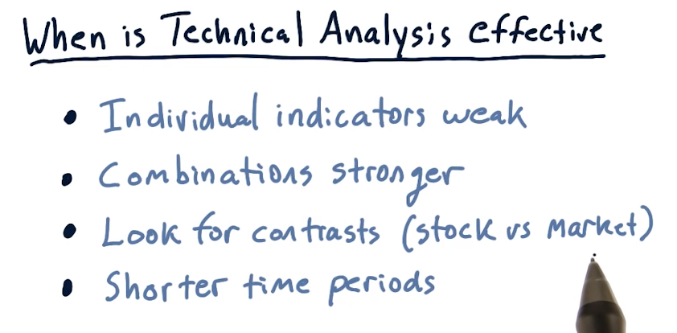
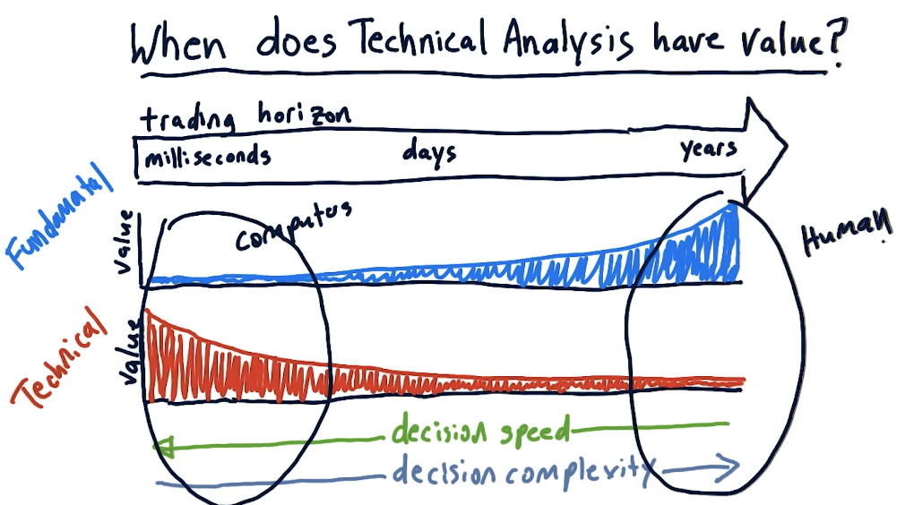
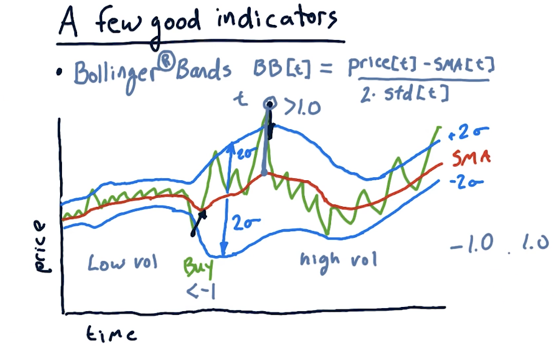

2-6: Technical analysis
There are two broad ways to choose stocks to buy or sell:
- fundamental analysis - looking at aspects of a company to estimate its value, looking to see if the price of a company is below its value
- technical analysis - looking for patterns or trends in a stock's price
Characteristics
The following are some characteristics of technical analysis:
- historical price and volume
- computing statistics called indicators
- leveraging indicators as heuristics
Why might these techniques work for technical analysis? Well, there is information to be found in the price of a stock, and heuristics work and have plenty of uses for artificial intelligence.
Fundamental or technical?
The following slide displays some technical and fundamental indicators:

When is technical analysis effective?
The lecture provides circumstances in which technical analysis is effective:

The lecture also provides a high-level breakdown of when technical analysis excels versus fundamental analysis. As we can see in the graph below, humans are best at technical analysis for long-term trading horizons, and computers are best at technical analysis in the short-term.

Good indicators
Momentum
Over X number of days, how has the price changed? It can be calculated as such:
momentum[t] = (price[t] / price[t-n]) - 1

Simple moving average
Given an N day window, we calculate the average price of the stock over multiple windows. This essentially smooths out the graph of the stock. Some important events when using simple moving average are:
- The current price crosses above the simple moving average. Combined with momentum, this can by a buy signal.
- Proxy for real value. If we see diversions away from the simple moving average, we should expect to see the price return to the simple moving average. This can be used as an arbitrage opportunity.
Using simple moving average, we can also calculate point values using the following equation:
sma[t] = (price[t] / price[t-n:t].mean()) - 1

Bollinger bands
We've talked about Bollinger bands previously - these use standard deviation on the simple moving average to measure deviation for indicators. The equation to calculate a Bollinger band for a day is:
bb[t] = (price[t] - sma[t]) / (2 * std[t])

Normalization
Plugging these indicators into a machine learning algorithm, it's quite possible that some indicators could become more influential than others. With that, we leverage normalization to provide our machine learning algorithm with indicators that maintain their original information, however, are not weighted due to their value. The equation for normalization is:
(values - mean) / values.std()